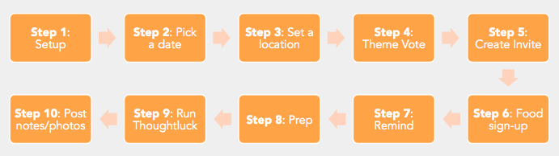

Anyone can lead a Thoughtluck, but hosts need to lead with a mindset of creating a safe space for guests to enter and feel welcomed at home. This environment can begin to be fostered through small acts like putting up signs at the door, welcoming guests and giving them nametags, introducing new guests to old-time guests, and facilitating a safe space through groundrules and open-mindedness in the introductions and conclusions. Hosts should not feel alone and should designate roles to others in the community (ex: someone to send out reminders, or welcome guests, or take notes in the meeting). All duties should not fall on the host but the community.
If it hasn’t been created, start one on your own or email Emily Harburg (eharburg@gmail.com).
Set a regular date each month (Recommended: meet on last Sunday of every month, or pick common date pattern).
Ask people to host in their homes. Work on finding different areas in the city and reaching new neighborhoods. Apartments or homes with rooms that can allow for smaller groups to congregate in are helpful.
Facebook allows you to set up polls where all members can vote. Set up a poll to allow people to vote for their favorite topic. Chose micro-topics that have mode depth and are a bit more controversial (or at least that have different opinions). Send out articles to read or a video when applicable. (Recommended: Post poll on the first of every month.)
Create a Facebook Group or e-mail to invite people in your community. Encourage attendees to invite others with different perspectives from their own and from different ethnic/gender/religious backgrounds. -- see example here.
Create a Google doc where attending guests can sign up for what food items they want to bring for dinner. Leaders can prompt on the form with what types of items are needed. Recommended items include:
Send a reminder (via Facebook or e-mail) on the morning of the Thoughtluck to remind guests to come and any final location directions.
Recommended materials include:
Post photos and key takeaways from the discussion on Facebook group or in another setting.